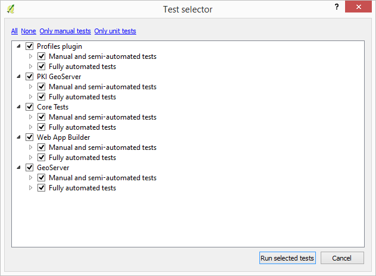
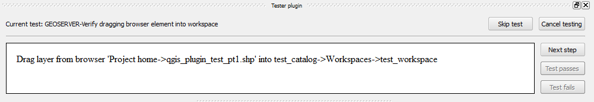
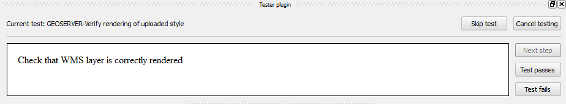
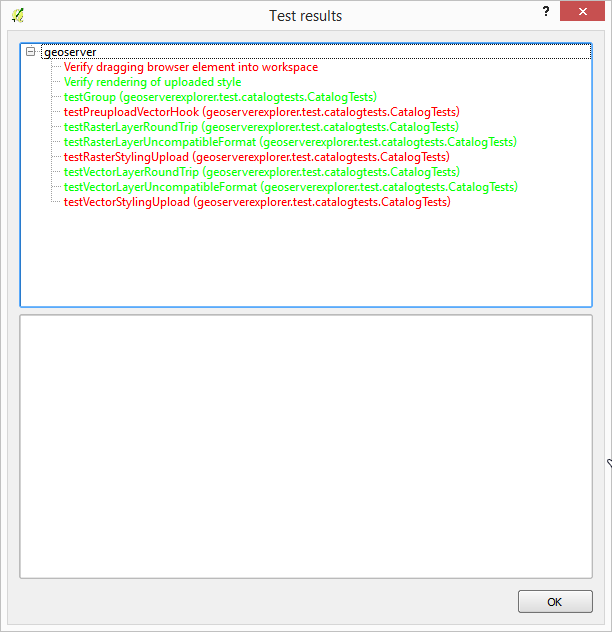
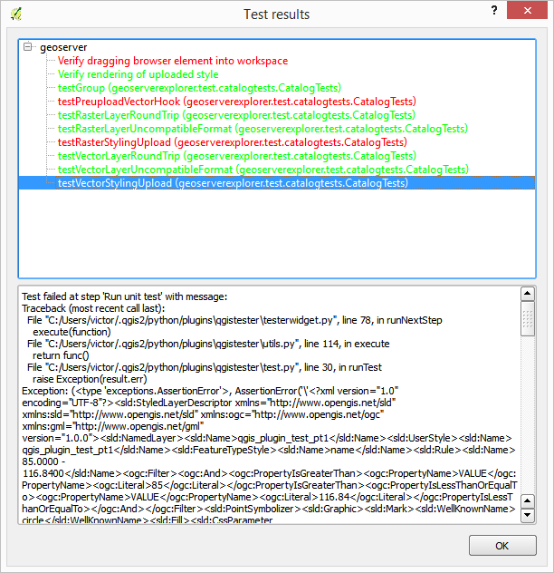

Usage¶
This document explains how to execute tests using the tester plugin.
Running tests¶
To start a test cycle, select the “Plugins/Tester/Start testing” menu
A window will be shown with the available tests grouped in categories.
The list of available tests depend on the active plugins. The tester plugin itself contains no tests. Tests are added by plugins when they are loaded.
If a plugin is active but its tests are not available in the tester plugin, it might be because the plugin was activated before the tester plugin was loaded. Try disabling and enabling the plugin to add its tests again, and then reopen the tester plugin test selector.
Select the tests that you want to be executed and then click on Run selected tests
In the upper part of the QGIS window you will see the testing panel.
It has a single panel with a description of the current step in the current test. If the step is automated (that is, if no user interaction is expected during this step), the panel is disabled. Otherwise, the panel will show a description of the task that the test expects you to perform.
All tests selected in the test selection dialog will be run sequentially. Tests can be of two types: automated and semi-automated. Each of them is described in the next sections, with indications about how to run the test in each case.
Automated tests¶
Automated tests have no user interaction. The tester plugin will take care of running the test and checking that the conditions defined to pass the test are met.
Semi-automated tests¶
Semi-automated test contain steps that do not require user interaction (such as data preparation), along with others that require the user to perform a given task or checking that the result of a previous step is correct.
Here are a couple examples of suchs test, to help understand how the user should interact with the plugin in these cases.
Example 1: A test to check correct uploading of styles to a GeoServer catalog. It has the following steps:
- Open a QGIS project and upload on of its layers (including its style) to a test GeoServer catalog.
- Create a WMS layer that connects to the layer uploaded to GeoServer on the previous step.
- Verify that the rendering of the WMS layer matches that of the original vector layer
The two first steps are automated, so the user doesnt have to do anything. At the end of those steps, the project will have a vector layer with a symbology stored in the project, and a WMS layer with a symbology that is used client side.
The third step is manual, and the test panel will show something like this.
It tells the user to verify that symbology is correctly uploaded and used. Based on that, the user should indicate whether the test passes or not. Once the user clicks on any of the buttons to indicate that, the test is finished and the plugin will move to the neext test.
Example 2: A test to verify that a layer is correctly imported into GeServer by dragging and dropping. It has the following steps
- Create a GeoServer catalog and set it up in the GeoServer explorer. Open the GeoServer explorer.
- Drag a layer file from the QGIS browser into the item corresponding to that catalog in the GeoServer explorer
- Verify that a layer has been created in the GeoServer catalog
In this case, the first step is automated. It leaves QGIS and GeoServer ready for the next step, which has to be performed by the user.
The test panel will look like this.
This is not the final step, so the “Test passes” and “Test fails” buttons are disabled. Instead, a “Next step” button is enabled. The user should click on it once he has performed the task indicated in the panel (that is, once the layer file has been dragged into the GeoServer explorer)
The last step is automated. The plugin will decide if the test passes or not, by checking the layers in the catalog. The user interaction is not needed for that. Once checked, the plugin will move to the next test.
Some tests might contain intermedate manual steps where something is to be verified by the user. In this case, the “Test passes” and “Test fails” button will be renamed to “Step passes” and “Step fails” and will be enabled. The “Next step” button will be disabled.
Test report¶
Once all tests have been run (or skipped), the test panel is hidden and a test results dialog is shown.
For those tests that have not passed correctly (displayed in red), you can click on their names and a detailed error trace will be shown in the lower panel
Right-clicking on the test name in the list will open a context menu with a single menu entry: “Open issue page”. Select it to open the corresponding issue page for the test, in case it has be defined. If no issue page has been defined for that test, the context menu will not be shown.